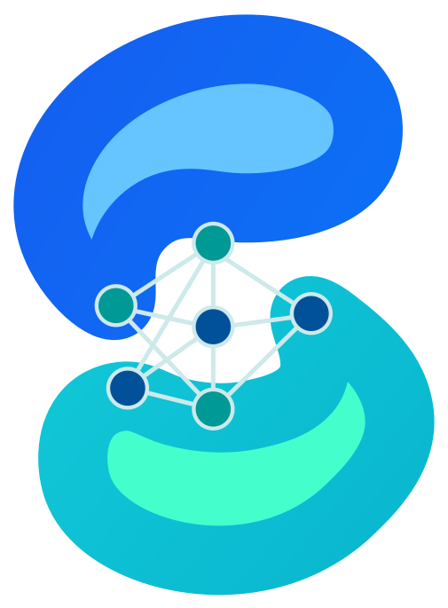

查看菌群组成
查看物种图集
比较两组丰度，按分类层级查看物种。

微脑智库微脑智库是面向阿尔茨海默病（AD）脑肠轴研究的肠道宏基因组分析工具。在浏览器里比较丰度、查看分类组成和样本热图，图表的配色、显示数量与导出尺寸都可以自己调整。
比较两组丰度，按分类层级查看物种。
向下滚动，看看图表怎么用 ↓
EXPLORE THE ANALYSIS
下面是工作区里的图表和常用设置。
比较 AD 与 NC 组的物种丰度
向下滚动，横向浏览本组图集 ↓用柱图比较 AD 与 NC 组的物种丰度，也可以切到分类层级图，从门、属一路看到种。只想看几个物种时，改一下显示数量即可。
按 KO 编号查看丰度，比较 AD 与 NC 两组。切到相对贡献视图，还能查看 KO 在样本内的占比。图表显示多少个 KO，可以从预设里选，也可以自己输入。
用柱图比较 MAG 丰度，用热图查看各 MAG 在不同样本中的分布。样本和 MAG 都可以聚类，树枝、排列方向和显示数量可以分别调整。
换配色，调整柱宽和标签字号，或把热图的横纵轴交换一下。看完后可以导出 SVG 或 PNG，图像尺寸和 PNG 的像素倍率也能设置。
DATA FOUNDATION
数据来自公共肠道宏基因组研究，包含 AD 与健康对照样本。物种、KO 和 MAG 结果由上游分析流程生成，工作区使用这些结果进行查询和比较。
AD 表示阿尔茨海默病组，NC 表示健康对照组。
START EXPLORING
选择物种、KO 或 MAG，查看完整图表、数据列表和处理方法。